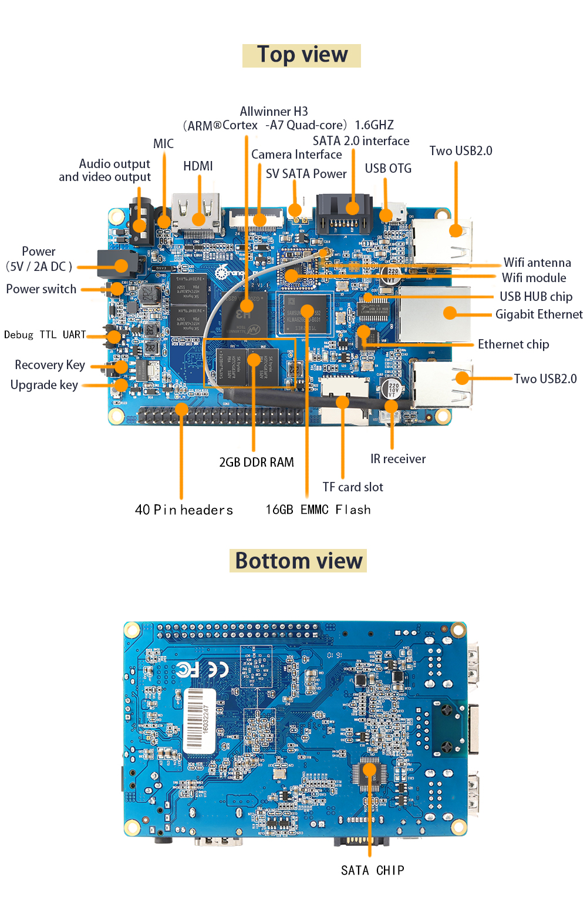

Today, we are going to talk about how to build and flash U-Boot, Linux Kernel, and Mali GPU Driver onto an Orange Pi Plus 2, which adopts AllWinner H3 as its CPU. The board looks like (cited from Orange Pi Plus 2 ):

Before start doing anything, the following paragraph is cited to explain the relationships among AllWinner, Sunxi and Linaro.
In march 2014, Allwinner joined Linaro as part of the new linaro digital home group. After this, AllWinner stopped communicating with the sunxi community, as linaro membership apparently satisfies the marketing need to be seen as an open source friendly company. Despite Linaro membership, Allwinner still violates the GPL on many counts. (cited from http://linux-sunxi.org/Allwinner .)
PART A: Cross Compile U-Boot and Linux Kernel
1. Linaro GCC
Linaro is a popular platform providing high-quality code for both Linux kernel and GCC tool chain. Linaro’s GCC toolchain of varoius versions can be directly found here.
Here, we download GCC latest-6 binary under arm-linux-gnueabihf.
1 | $ wget -c |
Test the cross compiler:1
2
3
4
5$ ${CC}gcc --version
arm-linux-gnueabihf-gcc (Linaro GCC 6.4-2017.11) 6.4.1 20171012
Copyright (C) 2017 Free Software Foundation, Inc.
This is free software; see the source for copying conditions. There is NO
warranty; not even for MERCHANTABILITY or FITNESS FOR A PARTICULAR PURPOSE.
2. U-Boot
U-Boot is a universal boot loader. We first download U-Boot and check out the latest release as follows:1
2
3$ git clone https://github.com/u-boot/u-boot
$ cd u-boot/
$ git checkout v2018.01
Current U-Boot supports various OrangePi boards. Let’s have a look at how many boards are supported for now?1
2
3
4
5
6
7
8
9
10
11
12
13
14
15
16$ cd ./u-boot/configs
$ ls -1s *range*
1 orangepi_2_defconfig
4 Orangepi_defconfig
1 orangepi_lite_defconfig
4 Orangepi_mini_defconfig
1 orangepi_one_defconfig
1 orangepi_pc2_defconfig
1 orangepi_pc_defconfig
1 orangepi_pc_plus_defconfig
1 orangepi_plus2e_defconfig
4 orangepi_plus_defconfig
1 orangepi_prime_defconfig
1 orangepi_win_defconfig
1 orangepi_zero_defconfig
1 orangepi_zero_plus2_defconfig
Unfortunately, our board is an Orange PI Plus 2, which has NO corresponding configuration file. Due to the sunxi community documentation, we use orangepi_plus_2e as a workaround for now.1
$ cp orangepi_plus2e_defconfig orangepi_plus2_defconfig
and modify orangepi_plus2_defconfig a bit:1
CONFIG_DEFAULT_DEVICE_TREE="sun8i-h3-orangepi-plus2"
Besides the configuration file under folder configs, the corresponding DTS Device Tree Source file under folder arch/arm/dts needs to be modified as well:1
2
3
4
5
6
7
8
9
10
11
12
13
14
15
16
17
18
19
20
21
22
23
24
25
26
27
28cd ./u-boot/arch/arm/dts
$ ls -1s *sun8i-h3*
16 sun8i-h3-bananapi-m2-plus.dtb
8 sun8i-h3-bananapi-m2-plus.dts
16 sun8i-h3.dtsi
4 sun8i-h3-nanopi.dtsi
12 sun8i-h3-nanopi-m1.dtb
4 sun8i-h3-nanopi-m1.dts
12 sun8i-h3-nanopi-m1-plus.dtb
4 sun8i-h3-nanopi-m1-plus.dts
12 sun8i-h3-nanopi-neo-air.dtb
4 sun8i-h3-nanopi-neo-air.dts
12 sun8i-h3-nanopi-neo.dtb
4 sun8i-h3-nanopi-neo.dts
16 sun8i-h3-orangepi-2.dtb
8 sun8i-h3-orangepi-2.dts
12 sun8i-h3-orangepi-lite.dtb
8 sun8i-h3-orangepi-lite.dts
12 sun8i-h3-orangepi-one.dtb
4 sun8i-h3-orangepi-one.dts
12 sun8i-h3-orangepi-pc.dtb
8 sun8i-h3-orangepi-pc.dts
16 sun8i-h3-orangepi-pc-plus.dtb
4 sun8i-h3-orangepi-pc-plus.dts
16 sun8i-h3-orangepi-plus2e.dtb
4 sun8i-h3-orangepi-plus2e.dts
16 sun8i-h3-orangepi-plus.dtb
4 sun8i-h3-orangepi-plus.dts
Clearly, there is NO corresponding DTS file for Orange PI Plus 2 under folder ./u-boot/arch/arm/dts. Similar to the configuration file, we use orangepi_plus_2e as a workaround for now.1
$ cp sun8i-h3-orangepi-plus2e.dts sun8i-h3-orangepi-plus2.dts
and change all occurrences 2E and 2e to 2 in file sun8i-h3-orangepi-plus2.dts:
Finally, we configure and build U-Boot for Orange PI Plus 2:1
2
3$ make ARCH=arm CROSS_COMPILE=${CC} distclean
$ make ARCH=arm CROSS_COMPILE=${CC} orangepi_plus2_defconfig
$ make ARCH=arm CROSS_COMPILE=${CC}
3. Linux Kernel
1 | $ hexo generate |
4. AllWinner H3 BSP
1 | $ hexo deploy |